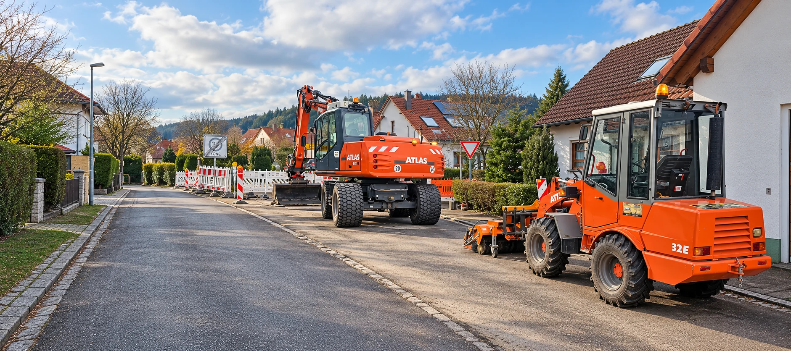

Einblicke
Vielseitig im Einsatz.
41 Bilder aus verschiedenen Bau-, Erd-, Maschinen-, Landschafts- und Pflegearbeiten – entdecken Sie unsere Einsatzbereiche.
Starke Leistungen. Saubere Ergebnisse.
PersönlichRegionalNaturverbunden
41 Fotos aus verschiedenen Arbeitsbereichen. Klicken Sie auf ein Bild, um es in größerer Ansicht zu sehen.
41 Fotos werden angezeigt.
Bereit für Ihr nächstes Projekt?
Erzählen Sie uns von Ihrem Vorhaben. Wir denken mit und beraten Sie persönlich.